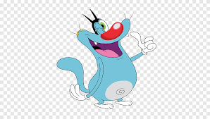

oggy Cartoon
Oggy and the Cockroaches is an animated TV series about a blue cat named Oggy who
lives in a house with three mischievous cockroaches, Joey, Marky, and Dee Dee. Oggy spends
his time watching television and enjoying simple pleasures, but his life is constantly disrupted
by the Cockroaches' antics, which often involve plundering his refrigerator and other slapstick
pranks. While Oggy frequently tries to defend himself and get rid of the Cockroaches, he
sometimes displays a surprising amount of sympathy for them, especially when they are in
danger. The series is known for its slapstick humor and fast-paced action, according to
Wikipedia. Oggy and the Cockroaches is an animated TV series about a blue cat named Oggy
who lives in a house with three mischievous cockroaches, Joey, Marky, and Dee Dee. Oggy
spends his time watching television and enjoying simple pleasures, but his life is constantly disrupted by the
Cockroaches' antics, which often involve plundering
his refrigerator and other slapstick pranks. While Oggy frequently tries to defend himself and get
rid of the Cockroaches, he sometimes displays a surprising amount of sympathy for them, especially when they are in danger. The series is known for
its slapstick humor and fast-paced action, according to Wikipedia.

Retun Home Page